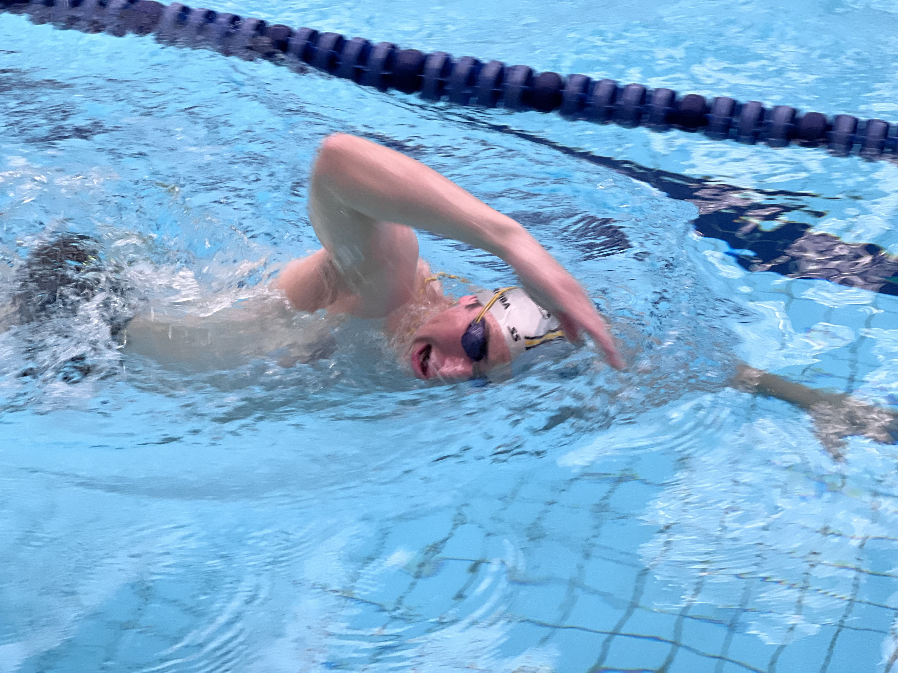
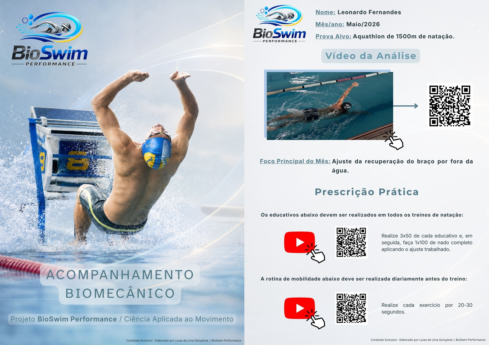

Send Us Your Videos
Your coaches record athletes swimming according to our simple protocol (underwater & above water). Share via Google Drive or our secure upload.
Stop guessing what's holding your athletes back. Our biomechanical analysis identifies the key limiting factors in each athlete's stroke and gives your coaches a clear roadmap.
No more conflicting corrections. Just clear priorities per athlete per cycle — so they actually improve.
12-week program. 3 analyses. Clear progress tracking. Athletes who stay longer and perform better.
Free Trial Analysis for 1 Athlete →🔬 Used by competitive swimmers & triathletes • Data-backed methodology

>Athletes get conflicting corrections from different coaches and don't know what to prioritize.
Shoulder injuries are cutting seasons short — and costing your club reputation.
Athletes leave your club because they don't see measurable progress in their swim times.
Your coaches are spending too much time guessing instead of training effectively.
The problem isn't lack of training. It's lack of direction. Your athletes don't need more volume — they need the right focus.

Every athlete has a unique stroke pattern. The key is identifying what's actually limiting their efficiency.
That's what BioSwim does — we turn simple videos into objective, actionable data for your coaching staff.
No more "I think he needs to rotate more." Instead: "His left elbow drops on entry, increasing drag. Here's the exact drill to fix it."
Our 12-week program delivers:
How many issues will we address? It depends on each athlete. Some may need to fix 2–3 errors over 12 weeks; others may need 4–5. We adapt to what each swimmer actually needs.
Your coaches record athletes swimming according to our simple protocol (underwater & above water). Share via Google Drive or our secure upload.
Using Kinovea and biomechanical models, we identify the main limiting factors for each athlete — from catch mechanics to body roll to shoulder stress.
We deliver a video breakdown + PDF report with the priorities, specific drills, and progress benchmarks for the next 12 weeks.
At week 6 and week 12, we re-analyze. You'll see exactly what improved, what's next, and prove to athletes their investment is paying off.

No more guesswork. Your coaches get data-driven insights so they can focus on what they do best — coaching.
See exactly how we break down stroke mechanics and identify what's limiting each athlete's performance.
⏱️ 5-minute breakdown • Real athlete example
Give your athletes the clarity they need to improve. Three analyses over 12 weeks — each one focused on the most impactful changes they can make.
or 3 x $48.30 (no interest)
🎯 First analysis on us.
We'll analyze one athlete from your club for free — so you can see the quality before you commit.
No commitment. We'll analyze 1 athlete for free and show you how we can support your entire team.
Minimum 5 athletes per club • Payment via Wise (card or bank transfer)